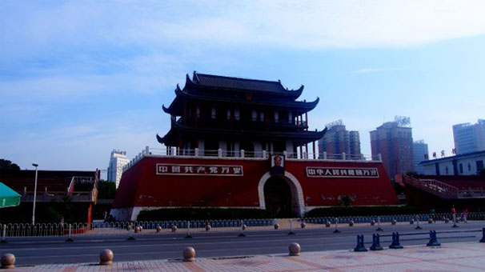

塞上江南，壮美宁夏
说一说其他的，南门广场原是银川城的市中心，各种重要的集会典礼在现代化的人民广场未建成前都是在这里，现在的南门广场已成为普通居民夜游的好地方，晚上来到这里，广场舞，黑暗料理摊贩，小商品市场应有尽有，这里可以体验到银川当地人生活；南门广场旁的小巷子里早上有各种面食，香喷喷的羊肉汤，推荐。

南关清真寺在我住的酒店旁边，游客身份进入门票10元，建议游览30分钟，早上进入有教民在读书朗读教义，切勿打扰喧哗；二层的礼堂游客不能进入，一楼有个小的参观馆，去的比较早未开放，少许遗憾。
行程导游
-
-
Mandy
23岁 职业:模特 爱好:电影、旅游啊啊啊啊啊啊